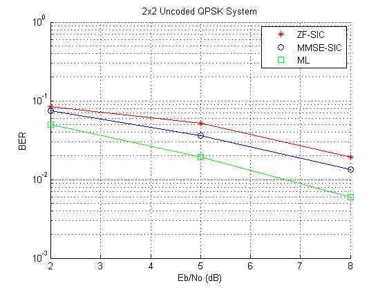
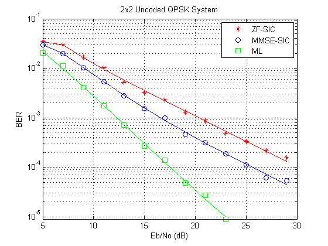

Spatial Multiplexing
This demo introduces Spatial Multiplexing schemes wherein the data stream is subdivided into independent sub-streams, one for each transmit antenna employed. As a consequence, they provide a multiplexing gain and do not require explicit orthogonalization as needed for space-time block coding.
Spatial multiplexing requires powerful decoding techniques at the receiver though. Of the many proposed [1], this demo highlights two ordered Successive Interference Cancellation (SIC) detection schemes. These schemes are similar to the original Bell Labs Layered Space-Time (BLAST) techniques as per [2], [3].
For expositional benefits the demo uses the basic 2x2 MIMO system employing two transmit and two receive antennas. For an uncoded QPSK modulated system it employs flat Rayleigh fading over independent transmit-receive links. At the receiver end, we assume perfect channel knowledge with no feedback to the transmitter, i.e. an open-loop spatial multiplexing system.
The demo shows two nonlinear interference cancellation methods - Zero-Forcing and Minimum-Mean-Square-Error - with symbol cancellation and compares their performance with the Maximum-Likelihood optimum receiver.
We start by defining some common simulation parameters
N = 2; % Number of Transmit antennas M = 2; % Number of Receive antennas EbNoVec = 2:3:8; % Eb/No in dB modOrd = 2; % constellation size = 2^modOrd numSym = N; % number of symbols
and set up the simulation.
% Create a local random stream to be used by random number generators for % repeatability. hStr = RandStream('mt19937ar'); % Get all bit combinations for ML receiver bits = de2bi(0:2^(modOrd*N)-1, 'left-msb')'; % Split them per Transmit antenna b = zeros(N, modOrd, length(bits)); for i = 1:length(bits) b(:, :, i) = reshape(bits(:,i), modOrd, N)'; end % Preallocate variables for speed dist = zeros(length(bits), 1); [BER_ZF, BER_MMSE, BER_ML] = deal(zeros(1, length(EbNoVec))); % Create QPSK mod-demod objects hMod = modem.pskmod('M', 2^modOrd, 'SymbolOrder', 'gray', 'InputType', 'bit'); hDemod = modem.pskdemod(hMod);
The simulation loop below simultaneously evaluates the BER performance of the three receiver schemes for each Eb/No value using the same data and channel realization. A short range of Eb/No values are used for simulation purposes. Results for a larger range, using the same code, are presented later.
% Set up a figure for visualizing BER results h = gcf; grid on; hold on; set(gca,'yscale','log','xlim',[EbNoVec(1)-0.01, EbNoVec(end)],'ylim',[1e-3 1]); xlabel('Eb/No (dB)'); ylabel('BER'); set(h,'NumberTitle','off'); set(h, 'renderer', 'zbuffer'); set(h,'Name','Spatial Multiplexing'); title('2x2 Uncoded QPSK System'); % Loop over selected EbNo points for idx = 1:length(EbNoVec) nErrs_zf = 0; nErrs_mmse = 0; nErrs_ml = 0; nBits = 0; while ( ((nErrs_zf < 100) || (nErrs_mmse < 100) || (nErrs_ml < 100)) ... && (nBits < 1e4)) % Create array of bits to modulate msg = randi(hStr, [0 1], modOrd, numSym); % Modulate data source = modulate(hMod, msg); % Split source among N transmitters (symbol-wise) Tx = reshape(source, N, numel(source)/N); clear source; % Flat Rayleigh Fading - independent links RayleighMat = (randn(hStr, M, N) + 1i*randn(hStr, M, N))/sqrt(2); % Calculate SNR from EbNo snr = EbNoVec(idx) + 10*log10(modOrd); % Add channel noise power to faded data r = awgn(RayleighMat*Tx, snr, 0, hStr); clear Tx; r_store = r; % Assume perfect channel estimation H = RayleighMat; % Zero-Forcing SIC receiver E_zf = zeros(modOrd, numSym); k = zeros(N, 1); % Initialization G = pinv(H); [val, k0] = min(sum(abs(G).^2,2)); % Start Zero-Forcing Nulling Loop for n = 1:N % Find best transmitter signal using minimum norm k(n) = k0; % Select Weight vector for best transmitter signal w = G(k(n),:); % Calculate output for transmitter n and demodulate bitstream y = w * r; E_zf(:, k(n):N:end) = reshape(demodulate(hDemod, y), modOrd, numSym/N); % Subtract effect of the transmitter n from received signal z = modulate(hMod, demodulate(hDemod, y)); r = r - H(:, k(n))*z; % Adjust channel estimate matrix for next minimum norm search H(:, k(n)) = zeros(M, 1); G = pinv(H); for aa = 1:n G(k(aa), :) = inf; end [val, k0] = min(sum(abs(G).^2,2)); end % Restore variables for next receiver H = RayleighMat; r = r_store; % MMSE SIC receiver E_mmse = zeros(modOrd, numSym); k = zeros(N, 1); % Initialization G = (H'*H + N/(10^(0.1*snr))*eye(N)) \ H'; [val, k0] = min(sum(abs(G).^2,2)); % Start MMSE Nulling Loop for n = 1:N % Find best transmitter signal using Min Norm k(n) = k0; % Select Weight vector for best transmitter signal w = G(k(n),:); % Calculate output for transmitter n and demodulate bitstream y = w * r; E_mmse(:, k(n):N:end) = reshape(demodulate(hDemod, y), modOrd, numSym/N); % Subtract effect of the transmitter n from received signal z = modulate(hMod, demodulate(hDemod, y)); r = r - H(:, k(n))*z; % Adjust channel estimate matrix for next min Norm search H(:, k(n)) = zeros(M, 1); G = (H'*H + N/(10^(0.1*snr))*eye(N)) \ H'; for aa = 1:n G(k(aa), :) = inf; end [val, k0] = min(sum(abs(G).^2,2)); end % Restore variables for next receiver H = RayleighMat; r = r_store; % ML receiver for i = 1:2^(modOrd*N) % Signal constellation for each bit combination sig = modulate(hMod, b(:, :, i)').'; % Distance metric for each constellation dist(i) = sum(abs(r - H*sig).^2); end % Get the minimum [notUsed, val] = min(dist); E_ml = b(:,:,val)'; % detected bits % Collect errors nErrs_zf = nErrs_zf + biterr(msg, E_zf); nErrs_mmse = nErrs_mmse + biterr(msg, E_mmse); nErrs_ml = nErrs_ml + biterr(msg, E_ml); nBits = nBits + length(msg(:)); end % Calculate BER for current point BER_ZF(idx) = nErrs_zf./nBits; BER_MMSE(idx) = nErrs_mmse./nBits; BER_ML(idx) = nErrs_ml./nBits; % Plot results semilogy(EbNoVec(1:idx), BER_ZF(1:idx), 'r*', ... EbNoVec(1:idx), BER_MMSE(1:idx), 'bo', ... EbNoVec(1:idx), BER_ML(1:idx), 'gs'); legend('ZF-SIC', 'MMSE-SIC', 'ML'); drawnow; end % Draw the lines semilogy(EbNoVec, BER_ZF, 'r-', EbNoVec, BER_MMSE, 'b-', ... EbNoVec, BER_ML, 'g-'); hold off;
As per [4], we realize that the ML receiver is the best in performance followed by the MMSE-SIC and ZF-SIC receivers. In terms of receiver complexity, ML grows exponentially with the number of transmit antennas while the ZF-SIC and MMSE-SIC are linear receivers combined with successive interference cancellation.
Simulation results comparing the three schemes for a larger range of Eb/No values are displayed next. These curves allow you to gauge the diversity order attained from the slope of the BER curve.
openfig('spatMuxResults.fig');
 Some areas of further exploration would be to try these methods for a larger number of antennas, with and without channel estimation.
References:
[1] George Tsoulos, Ed., "MIMO System Technology for Wireless Communications", CRC Press, Boca Raton, FL, 2006.
[2] G. J. Foschini, "Layered space-time architecture for wireless communication in a fading environment when using multiple antennas," The Bell Sys. Tech. Journal, 1996, No. 1, pp. 41-59.
[3] P. W. Wolniansky, G. J. Foschini, G. D. Golden, R. A. Valenzuela, "V-BLAST: An Architecture for realizing very high data rates over the rich scattering wireless channel," 1998 URSI International Symposium on Signals, Systems, and Electronics, 29 Sep.-2 Oct. 1998, pp. 295-300.
[4] X. Li, H. C. Huang, A. Lozano, G. J. Foschini, "Reduced-complexity detection algorithms for systems using multi-element arrays", IEEE® Global Telecommunications Conference, 2000. Volume 2, 27 Nov.-1 Dec. 2000, pp. 1072-76.